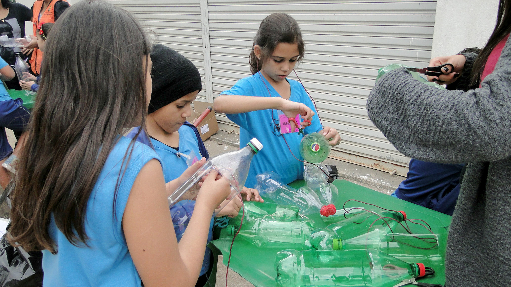
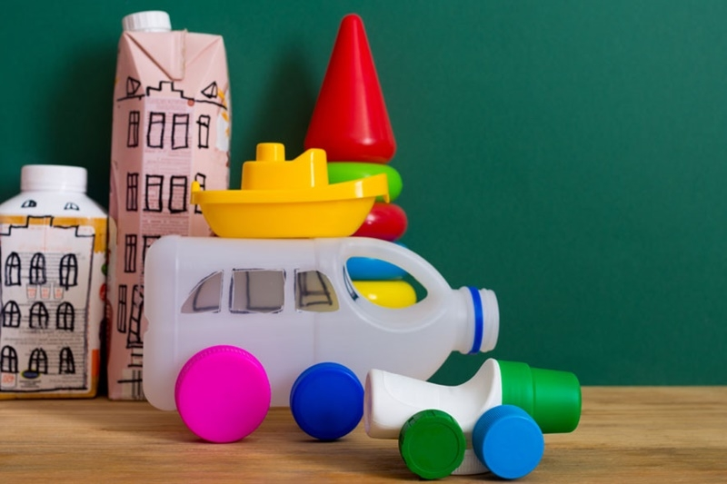
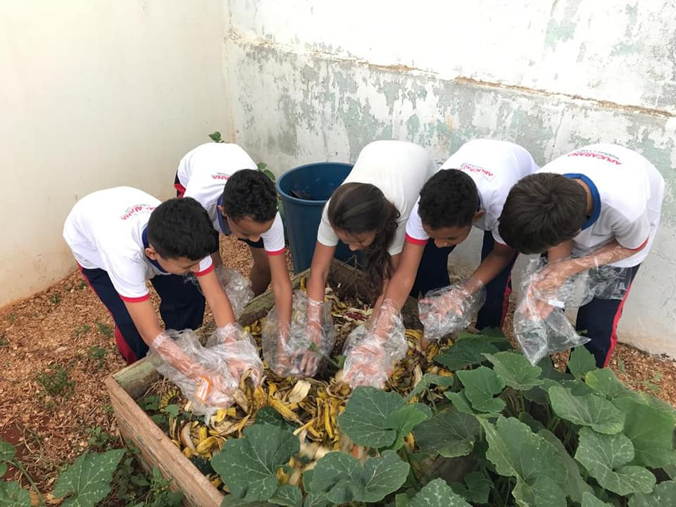
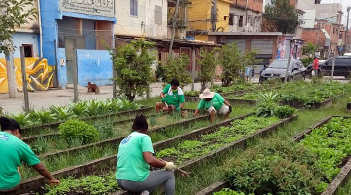
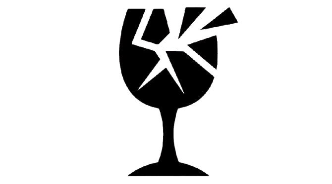
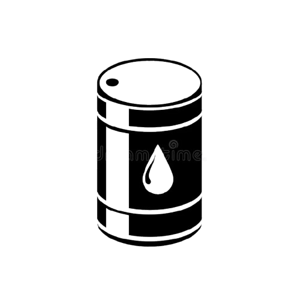
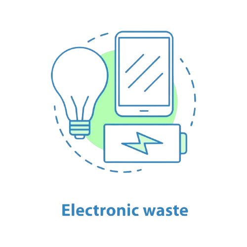
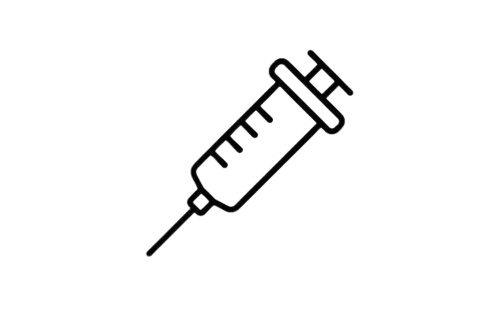

O Jovem Ambiente é um projeto formado por jovens comprometidos com a educação ambiental e a construção de um futuro mais sustentável. Nossa missão é conscientizar crianças sobre a importância do descarte correto dos resíduos, incentivando desde cedo atitudes responsáveis que contribuam para a preservação do meio ambiente. Acreditamos que a educação é a principal ferramenta para transformar a sociedade. Por isso, promovemos atividades educativas, palestras e oficinas práticas de reciclagem, nas quais materiais que seriam descartados ganham uma nova utilidade, sendo transformados em brinquedos, quadros, objetos decorativos e diversos produtos artesanais. Mais do que ensinar sobre reciclagem, buscamos despertar a criatividade, o senso de responsabilidade e o respeito pela natureza, mostrando que pequenas ações podem gerar grandes mudanças. Jovem Ambiente é um movimento de jovens que inspira novas gerações a cuidar do planeta, promovendo cidadania, sustentabilidade e esperança para um futuro mais verde. Nosso lema: "Regar para transformar!" 🌱💧🌸

Projeto voltado para incentivar crianças a reciclar

Brinquedo reciclado feito em oficinas

Oficina realizada com crianças para ensinar compostagem corretamente.

Projeto futuro voltado para que a comunidade possa cultivar e colher alimentos de forma gratuita e comunitária.
Você sabe como separar o lixo corretamente?
Veja estas curiosidades e descubra!

Você sabia que descartar o vidro de forma errada pode acabar machucando as pessoas que recolhem?
por isso sempre que for descartas cacos de vidro coloque-os em uma garrafa pet e vede corretamente, ou enrole em papeis grossos .

Você sabia que descartar o o oléo de forma errada pode contaminar até 1 milhão de litros de água por litro de óleo?
Por isso, sempre que for descartar cacos de vidro, coloque-os em uma garrafa PET e vede corretamente, ou embrulhe-os em papéis grossos.

Você sabia que o descarte incorreto de eletrônicos libera gases e metais pesados que contaminam gravemente a água e o ar?
separe eletrônicos e pilhas do lixo comum e nunca quebre-os para evitar vazamentos toxicos, e entregue em ecopontos.

O descarte incorreto de agulhas tambem pode ocasionar acidentes
Por isso para descartas coloque-as em um recipiente rigido (como uma garrafa de amaciante) vede bem e leve a uma UBS ou farmacia para descartar.
Quer fazer uma doação ou ser um voluntário? Entre em contato com a gente!